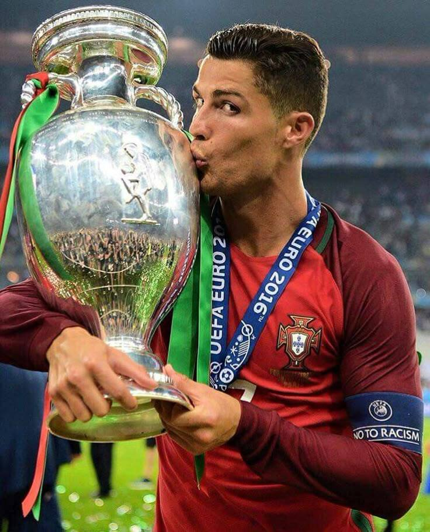

Recordes por Portugal
Feitos que solidificaram seu nome como uma lenda do futebol mundial.
0+
Gols pela Seleção
Recorde Mundial Absoluto
0+
Jogos Oficiais
Mais partidas por uma seleção
0
Conquista Histórica
Campeão da Eurocopa
0
Copas do Mundo
Único jogador a marcar em 5 edições
Trajetória Internacional
Cristiano Ronaldo estreou pela Seleção Portuguesa em 2003, aos 18 anos. Sua ascensão como capitão e líder coincidiu com a "Geração de Ouro" de Portugal, transformando o time em uma potência mundial.
A Eurocopa de 2016 e a Liga das Nações de 2019 consagraram seu legado. Sua longevidade no futebol de elite garantiu recordes impressionantes — mais gols e mais jogos por uma seleção nacional.
Ver Momentos Épicos

Galeria de Glórias
Imagens que contam a história de uma nação e seu maior herói.